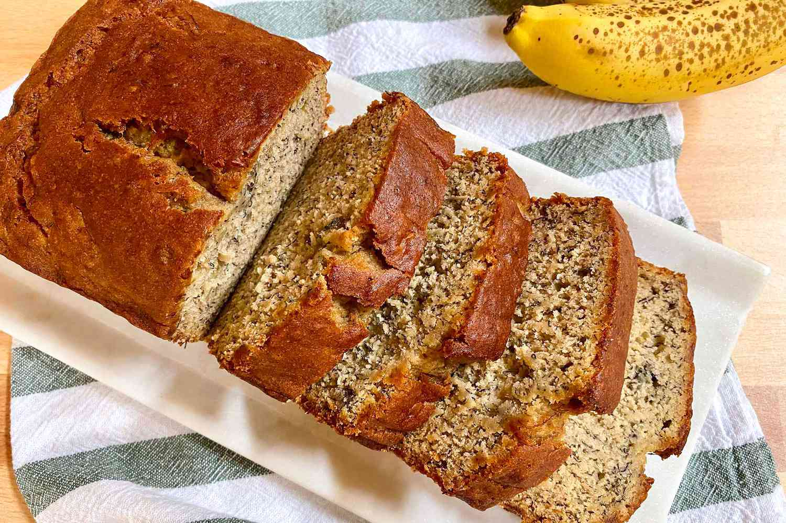

Banna Bread Recipe
Home

Description
A delicious dessert often made using spare ripe bananas. Its a perfect
sweet treat for those getting into baking. The recipe is easy and its
very tasty.
Ingredients
- 3-4 medium overripe bananas, mashed (1 1/2cups)
- 1/3 cup unsalted butter, melted
- 3/4 cup granulated sugar
- 1 large egg, beaten
- 1 teaspoon vanilla extract
- 1 1/2 cup gluten-free all purpose flour
- 3/4 teaspoon baking soda
- 3/4 teaspoon baking powder
- 1/2 teaspoon salt
Steps
- Preheat oven to 350°F.
- Prepare the loaf pan:
Grease an 8x4-inch loaf pan generously
with cooking spray.
- Mix the wet ingredients:
In a large mixing bowl, add mashed
bananas and stir in melted butter, sugar, egg and vanilla.
- Mix the dry ingredients and combine:
In a smaller bowl, add
flour, baking soda, baking powder, and salt. Whisk to combine. Add
the flour mixture to the larger bowl with the wet ingredients and
stir until fully combined.
- Bake:
Pour batter into the prepared loaf pan, scraping the bowl
to assist. Bake for 50 min to 1 hour, or until a tester comes out
clean.
- Serve:
Cool on a rack at least 15 min before removing loaf from
the pan. Let it cool and enjoy